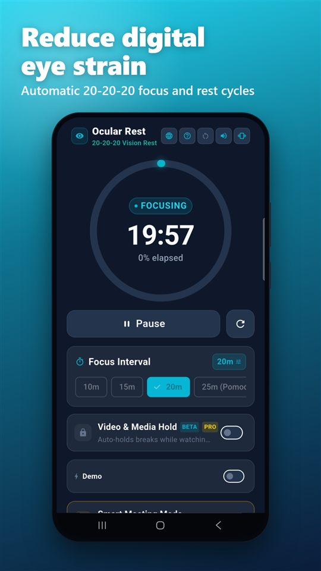
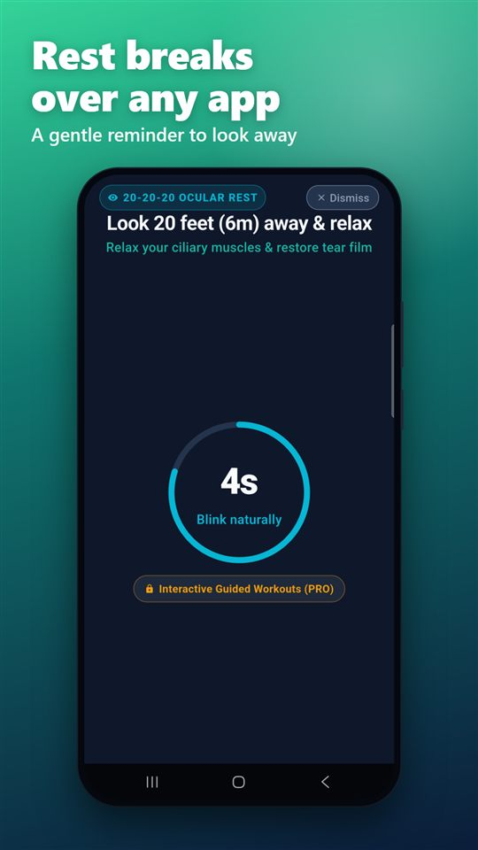

The 20-20-20 Rule: A Simple Habit for Tired Screen Eyes
Combat digital eye strain, refresh dry eyes, and build effortless ocular rest habits during long screen sessions with Ocular—a distraction-free timer built for Android.
What is the 20-20-20 Rule?
The 20-20-20 rule is an ergonomic visual guideline: every 20 minutes of screen use, look at an object at least 20 feet away for 20 seconds.
Created by California optometrist Dr. Jeffrey Anshel in the early 1990s, the technique is widely recommended by the American Academy of Ophthalmology (AAO), the American Optometric Association (AOA), and eye specialists worldwide as an effective behavioral intervention against digital eye fatigue.
How It Relaxes Ciliary Muscles
Focusing on a screen closer than an arm's length requires your eyes' internal ciliary muscles to flex continuously. Shifting your gaze past 20 feet (6 meters) shifts the lens to optical infinity, letting those muscles completely decontract.
Restoring the Tear Film
Studies show people blink 50% to 66% less frequently when concentrating on computers and phones. Deliberate 20-second pauses allow normal blinking to re-coat the cornea with fresh tears, combating dryness and irritation.
The 20-20-20 rule is an ergonomic wellness habit, not medical treatment. If you experience chronic blurriness, severe headaches, or double vision, always schedule an exam with an eye care professional.
Recognizing Digital Eye Strain & Computer Vision Syndrome (CVS)
If you spend 4 or more hours a day behind monitors, laptops, or mobile devices, you may experience symptoms of Computer Vision Syndrome. Taking regular micro-breaks directly targets the root causes:
Dry, Burning, or Gritty Eyes
Reduced blink frequency leaves tear film exposed to air evaporation, leading to stinging, redness, or reflex watery eyes.
Near-to-Far Focusing Lag
Accommodative spasm occurs when eye muscles remain locked in close-range focus and struggle to adjust when looking around the room.
Frontal Headaches & Brow Ache
Sustained visual effort triggers tension across the forehead, temples, and brow muscles, particularly under uneven room lighting.
Neck & Upper Shoulder Stiffness
Subconscious forward-head posture ("text neck") while straining to decipher small text or monitor glare tightens upper spinal muscles.
How to Practice the 20-20-20 Routine
The method takes less than a minute of your time, but consistency is where most people struggle when immersed in coding, writing, or gaming.
-
1. Set an automated background timer
When you are deeply focused, time slips away. An automated timer app like Ocular tracks intervals quietly without requiring manual clock-watching.
-
2. Fixate on a distant target
Look out of a window, down a hallway, or across the room at an object roughly 20 feet (6 meters) away. Precision is unnecessary—the goal is distance focus.
-
3. Hold soft focus for 20 seconds
Keep your gaze relaxed. Give your ciliary muscles a full 20 seconds to decontract and reset their accommodative tension.
-
4. Take 3–4 deliberate, full blinks
Close your eyelids fully and pause briefly to spread lipid-rich tears evenly across the eye surface before resuming work.
Desk Ergonomics & Screen Hygiene Tips
Arm's Length Distance
Position your primary display roughly 20 to 28 inches (50–70 cm) from your eyes, with the top of the monitor slightly below eye level.
Balance Ambient Lighting
Prevent harsh monitor glare by matching room illumination to screen brightness. Avoid placing screens directly in front of unshaded windows.
Scale Text & UI Contrast
Enlarge font sizing to avoid squinting or leaning inward. Aim for high contrast dark-on-light or warm dark modes with sufficient legibility.
Hydration & Air Flow
Drink water consistently throughout the day and deflect direct air-conditioning vents or heaters away from your face.
Ocular: The Smart 20-20-20 Break Timer for Android
Built specifically for programmers, digital artists, writers, and gamers who need dependable eye break reminders without intrusive friction.
- Gentle Screen Overlay: Seamless full-screen break prompts guide your 20-second pause over any active app.
- Floating Timer Pill Widget: A compact, draggable widget keeps you aware of your next break at a glance.
- Smart Video & Call Pause: Automatically detects phone calls and video playback so your meetings and media are never awkwardly interrupted.
- Streak & Habit Tracking: Daily goals and consistency metrics help you turn eye rest into a natural reflex.
- Guided Eye Exercises (Pro): Unlock structured eye workouts including figure-8 tracking, directional movement, and soothing background chimes.
- No Account Required & Local Storage: Zero mandatory sign-ups or personal data forms. Your timer preferences and streak history stay saved locally on your device.


Frequently Asked Questions
What is the 20-20-20 rule and why does it matter?
The 20-20-20 rule instructs screen users to look at an object 20 feet away for 20 seconds every 20 minutes. It resets the eye's focusing muscles (ciliary body) and triggers natural blinking, reducing symptoms of Computer Vision Syndrome like dry eyes, headaches, and blurred vision.
Who invented the 20-20-20 rule?
It was introduced in the early 1990s by Dr. Jeffrey Anshel, an optometrist and workplace ergonomics specialist, to provide computer users with an easy-to-remember habit for preserving visual comfort.
Why do my eyes feel so dry after looking at screens?
Normally, humans blink 15 to 20 times per minute. When staring intensely at digital screens, blink rates drop drastically to 5–7 times per minute. Incomplete and infrequent blinks allow the tear film to dry out rapidly.
Does the 20-20-20 rule cure eye problems?
No. It is a behavioral ergonomics habit designed to minimize muscular fatigue and dry eye discomfort. It is not a cure for refractive errors, astigmatism, or ocular diseases. If symptoms persist, consult a qualified optometrist or ophthalmologist.
Do I have to look precisely 20 feet away?
No, 20 feet is simply the optical threshold where the light rays entering your eye become parallel and the ciliary muscle relaxes. A distant tree out of a window or the far wall of an office works perfectly.
How does the Ocular Android app work?
Ocular runs quietly in the background on your Android device. It displays a discrete floating timer badge or triggers a full-screen break screen with countdown pacing. It also features smart pause technology to avoid interrupting calls or video streaming.